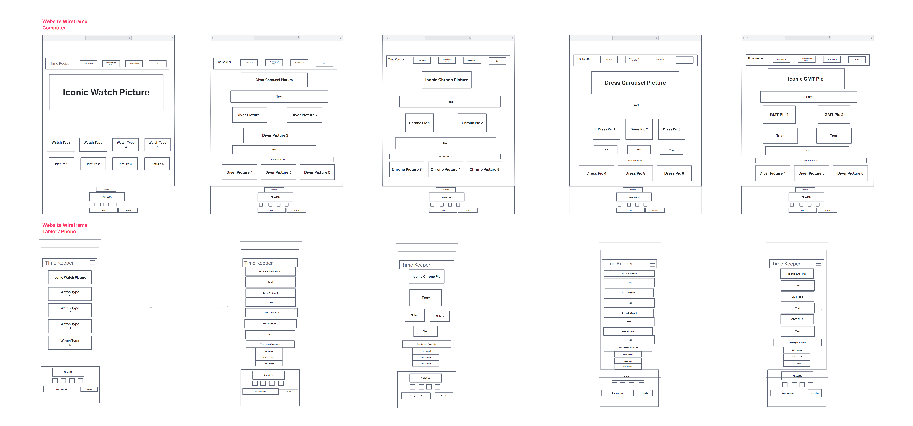

Report
Your name
Brandon Yap Jun Jie
Introduction:
What is the essential story being told by your site and what type of structure did you choose
to implement?
My site serves as a basic guide to anyone looking to embark into the hobby of collecting watches,
it helps the user to learn about the different types of watches and the history about them
and most importanly we can recommend certain time pieces to help start their journey into collecting watches.
I chose to apply a newsletter format for my website as it covers watches as the main topic and have type of
watches as the other catergories. Through this format I am able to have a targeted audience either those
who are already into watches or those starting to get into watches.

Inspiration:
State 3 things that have inspired you when creating your website (e.g. guest speakers,
websites, artists, blogs).
My first inspiration would be myself as I am a avid watch enthusiast also known as a horologist, in my free 
time i would look up on the lastest watch trend and would also watch reviews on them on youtube. I would also
do my research on the history of the timepiece and look up on the internet to further deepen my
knowledge of the classic timepiece. 
My second inspiration would be Teddy Baldassarre he was my most watch youtuber, he was the one that got me
hooked into becoming a watch collector. The more I watched his videos the more I wanted to find out more 
about the watch and eventually getting the watch for myself.
Lastly, Hodinkee is my last inspiration. Hodinkee is a watch website known for new and vintage wristwatches.
I would be able to read up on the watch reviews on the website and learn about the watches more indepth
which can help spark my creativity.

Accessibility:
State 3 ways in which your site is accessible.
I provided Alt Text for images this way users who are visually impaired who are unable to see the images will
still be able to understand the content of my webpage when using text to speech softwares.

I used thick font and large size this will help with people low vision that cannot read small text size.

Lastly my website is easy to navigate around so that new users would not have any difficulities using the 
website.

Usability:
State 3 ways in which you considered the usability of your site.
I have made my navigation bar limited to the watch catergories, as such this made the navigation bar less
bulky and helps the users orientate themseleves with the webpage.

I have made my website have a strong colour contrast between the background and text such that the users
can read the text easily and not strain their eyes.

I have made my site responsive this means that users would be able to use the site on their smartphones
or tablet without having to zoom in and navigate with difficulities.

Learning:
State 3 things you had to learn or find out to create your site. How did you achieve that?
Firstly I have learnt to use bootstrap to help make the website layout, this helped making the website look
neater and concise. Bootstrap offers basic grid layout using the bootstrap grid system.

Secondly I learnt to make my website responisve through media queries, from w3school which provides
examples on making the website more responisve.

Lastly I learnt to make my website dynamic instead of static through the implementation of javascript in my
webpage such as having a carousel etc...

Evaluation I:
What aspects of your work do you think were particularly successful? Why?
Making the webpage responisve as everything fits perfectly when the webpage is access on the smartphone
and that I did not find any difficulities when using the webpage on the smartphone from the images being 
the perfect size to the text being legible.

Evaluation II:
What aspects of your work could be improved? How might you do things differently another
time?
My javascript portion could be improved on, I would learn more ways to implement javascript in my website to 
make it even more dynamic and more eye catching to the user and attractive towards the user.

Resources:
What resources did you use in your work? List any sources of information, libraries, plugins,
code or tools (you should also indicate inclusions from other sources within your code using
comments)
mailformat I took it from the internet Taha Sufiyan,"How to Do an Email Validation in JavaScript?
"https://www.simplilearn.com/tutorials/javascript-tutorial/email-validation-in-javascript [Nov 25, 2022]
I used how he defined what was the valid format for the email.

Responsive Web Design - Media Queries "https://www.w3schools.com/css/css_rwd_mediaqueries.asp" 
I used this to help make my website responsive.

Grid system "https://getbootstrap.com/docs/4.0/layout/grid/" I used bootstrap to help with my website
layout.

35 Best GMT Watches - Top GMTs to Buy Right Now "https://www.wristenthusiast.com/latest/best-gmt-watches"
[August 18, 2022] I used the information and images to help write my articles.

The 32 Best Dress Watches for 2023 "https://teddybaldassarre.com/blogs/watches/best-dress-watches" 
[FEBRUARY 2023] I used the information and images to help write my webpage.

27 Best Chronograph Watches for 2023 "https://teddybaldassarre.com/blogs/watches/chronograph-watches"
[JANUARY 2023] I used the information and images to help write my webpage.

Tom Mulraney, In-Depth History of the Rolex Submariner  Part 1, The Early References "https://monochrome-watches.com/rolex-submariner-history-part-1-the-early-references/"
[18/08/2020] I References the relevent information and images to help with my webpage.

JACK FORSTER, From War Time To Watch Time: The Tank Behind The Cartier Tank "https://www.hodinkee.com/articles/from-war-time-to-watch-time-the-tank-behind-the-cartier-tank"
[JUNE 07, 2021] I used the information and images to help write my articles.

Handlebars "https://handlebarsjs.com/installation/#downloading-handlebars" [3/17/2021]
I used handlebars in my javascript to help implement templates on my webpage.

Roboto Condensed, "https://fonts.google.com/specimen/Roboto+Condensed"
I used google font in my webpage.

Appendices:
Site map (if useful), wireframes and mock-ups
